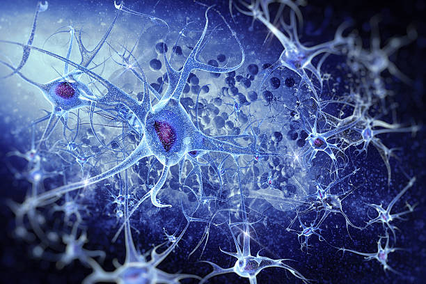

the brain is a complex organ that control thought,
memory,emotion,touch,motorskill
vision,breathing,temperature, and many other functions that regulate the body.
it is made up of billions of cells called neurons.it also response to how people
respond to stressful situation (i.e.writing of an exam,loss of a job,
birth of a child,illness.etc) by regulating heart and breathing rates.
the human brain,the control center of the nervous system
is a complex organ divided into three main part :the cerebrum,
cerebellum, and the brain stem.
brain

neuronsbrain
the three main part of the brain
cerebrum
The cerebrum processes sensory information,control voluntary movement,
and is responsible for higher-level function like consious thought,
language, and voluntary movement.
It is devided into two hemispheres, the left and right, which communicate
through a structure called the corpus callosum. each hemisphere is
further divided into lobes:frontal, pariental, temporal, and occipital.